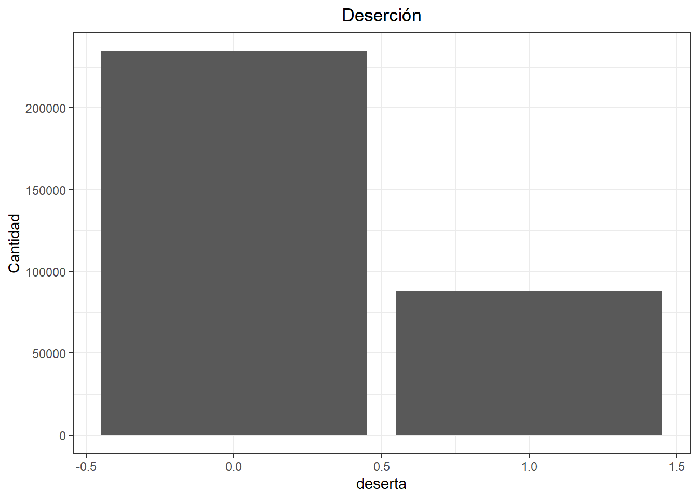
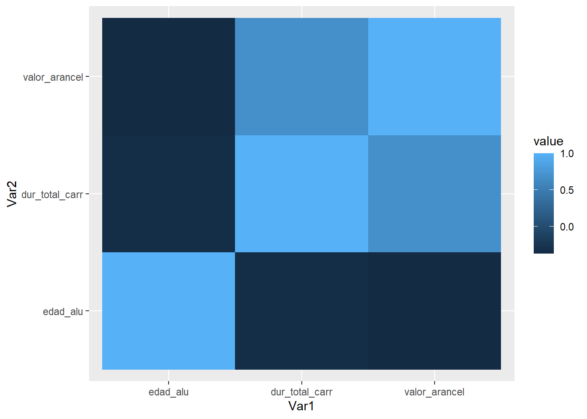

En esta sesión, aprenderás a realizar un análisis de regresión logística utilizando datos de matrícula de educación superior de los años 2021 y 2022. La regresión logística es una técnica estadística utilizada para modelar la probabilidad de ocurrencia de un evento binario, como la deserción de estudiantes, en función de una o más variables independientes. Exploraremos cómo preparar los datos, ajustar el modelo, evaluar los supuestos, interpretar los resultados y visualizar las relaciones entre las variables.
Comencemos estableciendo el directorio de trabajo.
getwd() # Verifica el directorio de trabajo actual
[1] "G:/Mi unidad/Teaching/Metodología Cuantitativa II 2024/Sesión 3"
setwd("G:/Mi unidad/Teaching/Metodología Cuantitativa II 2024/Sesión 3") # Cambia esta línea de código por tu directorio de trabajo
Instalar y Cargar Paquetes
Instalemos y carguemos los paquetes que utilizaremos en esta sesión usando el paquete pacman.
if(!require(pacman)) install.packages("pacman")
Loading required package: pacman
pacman::p_load(tidyverse, # tidyverse es en realidad una colección de paquetes muy popular, que incluye ggplot2, dplyr, etc corrplot, GGally, lmtest, DescTools, car, reshape2, tidymodels, knitr)
Importar Datos
Importamos los datos de matrícula de educación superior para los años 2021 y 2022. Luego, seleccionamos la cohorte de estudiantes que ingresaron en 2021 para estudiar la deserción en su primer año.
# Importar los datos de matrícula para 2021 y 2022mat2021 <-read.csv(file ="20230802_Matrícula_Ed_Superior_2021_PUBL_MRUN.csv", header =TRUE, sep =";") mat2022 <-read.csv(file ="20230802_Matrícula_Ed_Superior_2022_PUBL_MRUN.csv", header =TRUE, sep =";")
Selección y manipulación
Parte importante del análisis de datos es la creación, transformación, limpieza y recodificación de datos para los propósitos que se busca. Aprendamos un poco acerca de aquellos con este trozo de código donde seleccionamos casos según cohorte y crearemos una nueva variable dependiente dicotómica que nos señalará deserción universitaria en base a estos dos conjuntos de datos de mat2021 y mat2022.
# Selección de casos: Cohorte que ingresó en 2021mat2021_1anio <- mat2021[which(mat2021$anio_ing_carr_ori =="2021"),]mat2022_2anio <- mat2022[which(mat2022$anio_ing_carr_ori =="2021"),]# Generación de variable dependiente: Indicador de Deserciónmat2021_1anio$deserta <-ifelse(mat2021_1anio$mrun %in% mat2022_2anio$mrun, "0", "1")mat2021_1anio$deserta <-as.numeric(mat2021_1anio$deserta)# Seleccionamos solo a estudiantes de pregradomat2021_1anio <- mat2021_1anio[which(mat2021_1anio$nivel_global =="Pregrado"),]# Exploración de los datoshead(mat2021_1anio)
cat_periodo id codigo_unico mrun gen_alu fec_nac_alu rango_edad
4 2021 794616 I111S22C8J1V1 98 2 200212 15 a 19 años
5 2021 755594 I111S12C420J1V1 99 1 200301 15 a 19 años
7 2021 1131128 I430S10C326J1V1 137 1 200104 20 a 24 años
8 2021 754806 I111S12C413J1V1 140 1 200106 20 a 24 años
15 2021 71451 I13S10C384J2V2 341 2 198803 30 a 34 años
19 2021 622982 I90S1C114J1V2 392 1 200101 20 a 24 años
anio_ing_carr_ori sem_ing_carr_ori anio_ing_carr_act sem_ing_carr_act
4 2021 1 2021 1
5 2021 1 2021 1
7 2021 1 2021 1
8 2021 1 2021 1
15 2021 1 2021 1
19 2021 1 2021 1
tipo_inst_1 tipo_inst_2
4 Institutos Profesionales Institutos Profesionales
5 Institutos Profesionales Institutos Profesionales
7 Centros de Formación Técnica Centros de Formación Técnica
8 Institutos Profesionales Institutos Profesionales
15 Universidades Universidades Privadas
19 Universidades Universidades CRUCH
tipo_inst_3 cod_inst nomb_inst cod_sede
4 Institutos Profesionales 111 IP DUOC UC 22
5 Institutos Profesionales 111 IP DUOC UC 12
7 Centros de Formación Técnica 430 CFT INACAP 10
8 Institutos Profesionales 111 IP DUOC UC 12
15 Universidades Privadas 13 UNIVERSIDAD SANTO TOMAS 10
19 Universidades Privadas CRUCH 90 UNIVERSIDAD AUSTRAL DE CHILE 1
nomb_sede cod_carrera
4 SEDE PADRE ALONSO DE OVALLE 8
5 SEDE PUENTE ALTO 420
7 SEDE RENCA 326
8 SEDE PUENTE ALTO 413
15 SEDE TEMUCO 384
19 CASA CENTRAL 114
nomb_carrera modalidad jornada
4 GASTRONOMIA Presencial Diurno
5 TECNICO EN GEOLOGIA Y CONTROL EN SONDAJE Presencial Diurno
7 TECNICO EN MECANICA Y ELECTROMOVILIDAD AUTOMOTRIZ Presencial Diurno
8 INGENIERIA EN ELECTRICIDAD Y AUTOMATIZACION INDUSTRIAL Presencial Diurno
15 PROGRAMA DE LICENCIATURA DE TRABAJO SOCIAL Presencial Vespertino
19 INGENIERIA CIVIL ACUSTICA Presencial Diurno
version tipo_plan_carr dur_estudio_carr dur_proceso_tit
4 1 Plan Regular 5 1
5 1 Plan Regular 5 1
7 1 Plan Regular 4 0
8 1 Plan Regular 8 1
15 2 Plan Regular de Continuidad 2 0
19 2 Plan Regular 11 0
dur_total_carr region_sede provincia_sede comuna_sede nivel_global
4 5 Metropolitana SANTIAGO SANTIAGO Pregrado
5 5 Metropolitana CORDILLERA PUENTE ALTO Pregrado
7 4 Metropolitana SANTIAGO RENCA Pregrado
8 8 Metropolitana CORDILLERA PUENTE ALTO Pregrado
15 2 La Araucanía CAUTIN TEMUCO Pregrado
19 11 Los Ríos VALDIVIA VALDIVIA Pregrado
nivel_carrera_1 nivel_carrera_2
4 Técnico de Nivel Superior Carreras Técnicas
5 Técnico de Nivel Superior Carreras Técnicas
7 Técnico de Nivel Superior Carreras Técnicas
8 Profesional Sin Licenciatura Carreras Profesionales
15 Licenciatura No Conducente a Título Carreras Profesionales
19 Profesional Con Licenciatura Carreras Profesionales
requisito_ingreso vigencia_carrera formato_valores
4 Educación Media VIGENTE CON ALUMNOS NUEVOS NA
5 Educación Media VIGENTE CON ALUMNOS NUEVOS NA
7 Educación Media VIGENTE CON ALUMNOS NUEVOS NA
8 Educación Media VIGENTE CON ALUMNOS NUEVOS NA
15 Título Profesional VIGENTE CON ALUMNOS NUEVOS NA
19 Educación Media VIGENTE CON ALUMNOS NUEVOS NA
valor_matricula valor_arancel codigo_demre area_conocimiento
4 194000 2510000 0 Administración y Comercio
5 194000 2240000 0 Ciencias Básicas
7 260000 2212000 0 Tecnología
8 254000 2430000 0 Tecnología
15 93000 2097000 0 Ciencias Sociales
19 175000 3869000 17030 Tecnología
cine_f_97_area cine_f_97_subarea
4 Servicios Servicios Personales
5 Ciencias Ciencias Físicas
7 Ingeniería, Industria y Construcción Ingeniería y Profesiones Afines
8 Ingeniería, Industria y Construcción Ingeniería y Profesiones Afines
15 Salud y Servicios Sociales Servicios Sociales
19 Ingeniería, Industria y Construcción Ingeniería y Profesiones Afines
area_carrera_generica
4 Técnico en Gastronomía y Cocina
5 Técnico en Geología
7 Técnico en Mecánica Automotriz
8 Ingeniería en Electricidad
15 Trabajo Social
19 Ingeniería Civil en Sonido y Acústica
cine_f_13_area
4 Servicios
5 Ciencias naturales, matemáticas y estadística
7 Ingeniería, Industria y Construcción
8 Ingeniería, Industria y Construcción
15 Salud y Bienestar
19 Ingeniería, Industria y Construcción
cine_f_13_subarea acreditada_carr acreditada_inst
4 Servicios personales ACREDITADA ACREDITADA
5 Ciencias Físicas NO ACREDITADA ACREDITADA
7 Ingeniería y Profesiones Afines SIN INFORMACIÓN ACREDITADA
8 Ingeniería y Profesiones Afines NO ACREDITADA ACREDITADA
15 Bienestar NO ACREDITADA ACREDITADA
19 Ingeniería y Profesiones Afines ACREDITADA ACREDITADA
acre_inst_desde_hasta acre_inst_anio costo_proceso_titulacion
4 26/08/2017 AL 26/08/2024 7 NA
5 26/08/2017 AL 26/08/2024 7 NA
7 05/01/2018 AL 05/01/2025 7 NA
8 26/08/2017 AL 26/08/2024 7 NA
15 31/03/2021 AL 31/03/2025 4 NA
19 12/11/2015 AL 12/11/2021 6 NA
costo_obtencion_titulo_diploma forma_ingreso deserta
4 NA 1- Ingreso Directo (regular) 0
5 NA 1- Ingreso Directo (regular) 0
7 NA 1- Ingreso Directo (regular) 1
8 NA 1- Ingreso Directo (regular) 1
15 NA 1- Ingreso Directo (regular) 1
19 NA 1- Ingreso Directo (regular) 0
dim(mat2021_1anio)
[1] 322448 53
str(mat2021_1anio)
'data.frame': 322448 obs. of 53 variables:
$ cat_periodo : int 2021 2021 2021 2021 2021 2021 2021 2021 2021 2021 ...
$ id : int 794616 755594 1131128 754806 71451 622982 1145550 437898 974737 736304 ...
$ codigo_unico : chr "I111S22C8J1V1" "I111S12C420J1V1" "I430S10C326J1V1" "I111S12C413J1V1" ...
$ mrun : int 98 99 137 140 341 392 427 428 452 637 ...
$ gen_alu : int 2 1 1 1 2 1 1 1 2 2 ...
$ fec_nac_alu : int 200212 200301 200104 200106 198803 200101 200102 200101 199801 200212 ...
$ rango_edad : chr "15 a 19 años" "15 a 19 años" "20 a 24 años" "20 a 24 años" ...
$ anio_ing_carr_ori : int 2021 2021 2021 2021 2021 2021 2021 2021 2021 2021 ...
$ sem_ing_carr_ori : int 1 1 1 1 1 1 1 1 1 1 ...
$ anio_ing_carr_act : int 2021 2021 2021 2021 2021 2021 2021 2021 2021 2021 ...
$ sem_ing_carr_act : int 1 1 1 1 1 1 1 1 1 1 ...
$ tipo_inst_1 : chr "Institutos Profesionales" "Institutos Profesionales" "Centros de Formación Técnica" "Institutos Profesionales" ...
$ tipo_inst_2 : chr "Institutos Profesionales" "Institutos Profesionales" "Centros de Formación Técnica" "Institutos Profesionales" ...
$ tipo_inst_3 : chr "Institutos Profesionales" "Institutos Profesionales" "Centros de Formación Técnica" "Institutos Profesionales" ...
$ cod_inst : int 111 111 430 111 13 90 430 75 143 103 ...
$ nomb_inst : chr "IP DUOC UC" "IP DUOC UC" "CFT INACAP" "IP DUOC UC" ...
$ cod_sede : int 22 12 10 12 10 1 22 2 26 8 ...
$ nomb_sede : chr "SEDE PADRE ALONSO DE OVALLE" "SEDE PUENTE ALTO" "SEDE RENCA" "SEDE PUENTE ALTO" ...
$ cod_carrera : int 8 420 326 413 384 114 175 54 110 1 ...
$ nomb_carrera : chr "GASTRONOMIA" "TECNICO EN GEOLOGIA Y CONTROL EN SONDAJE" "TECNICO EN MECANICA Y ELECTROMOVILIDAD AUTOMOTRIZ" "INGENIERIA EN ELECTRICIDAD Y AUTOMATIZACION INDUSTRIAL" ...
$ modalidad : chr "Presencial" "Presencial" "Presencial" "Presencial" ...
$ jornada : chr "Diurno" "Diurno" "Diurno" "Diurno" ...
$ version : int 1 1 1 1 2 2 1 1 1 1 ...
$ tipo_plan_carr : chr "Plan Regular" "Plan Regular" "Plan Regular" "Plan Regular" ...
$ dur_estudio_carr : int 5 5 4 8 2 11 4 10 8 8 ...
$ dur_proceso_tit : int 1 1 0 1 0 0 0 2 1 0 ...
$ dur_total_carr : int 5 5 4 8 2 11 4 10 8 8 ...
$ region_sede : chr "Metropolitana" "Metropolitana" "Metropolitana" "Metropolitana" ...
$ provincia_sede : chr "SANTIAGO" "CORDILLERA" "SANTIAGO" "CORDILLERA" ...
$ comuna_sede : chr "SANTIAGO" "PUENTE ALTO" "RENCA" "PUENTE ALTO" ...
$ nivel_global : chr "Pregrado" "Pregrado" "Pregrado" "Pregrado" ...
$ nivel_carrera_1 : chr "Técnico de Nivel Superior" "Técnico de Nivel Superior" "Técnico de Nivel Superior" "Profesional Sin Licenciatura" ...
$ nivel_carrera_2 : chr "Carreras Técnicas" "Carreras Técnicas" "Carreras Técnicas" "Carreras Profesionales" ...
$ requisito_ingreso : chr "Educación Media" "Educación Media" "Educación Media" "Educación Media" ...
$ vigencia_carrera : chr "VIGENTE CON ALUMNOS NUEVOS" "VIGENTE CON ALUMNOS NUEVOS" "VIGENTE CON ALUMNOS NUEVOS" "VIGENTE CON ALUMNOS NUEVOS" ...
$ formato_valores : logi NA NA NA NA NA NA ...
$ valor_matricula : int 194000 194000 260000 254000 93000 175000 220000 105000 190000 190000 ...
$ valor_arancel : int 2510000 2240000 2212000 2430000 2097000 3869000 2064000 3325000 2230000 1900000 ...
$ codigo_demre : int 0 0 0 0 0 17030 0 29055 0 0 ...
$ area_conocimiento : chr "Administración y Comercio" "Ciencias Básicas" "Tecnología" "Tecnología" ...
$ cine_f_97_area : chr "Servicios" "Ciencias" "Ingeniería, Industria y Construcción" "Ingeniería, Industria y Construcción" ...
$ cine_f_97_subarea : chr "Servicios Personales" "Ciencias Físicas" "Ingeniería y Profesiones Afines" "Ingeniería y Profesiones Afines" ...
$ area_carrera_generica : chr "Técnico en Gastronomía y Cocina" "Técnico en Geología" "Técnico en Mecánica Automotriz" "Ingeniería en Electricidad" ...
$ cine_f_13_area : chr "Servicios" "Ciencias naturales, matemáticas y estadística" "Ingeniería, Industria y Construcción" "Ingeniería, Industria y Construcción" ...
$ cine_f_13_subarea : chr "Servicios personales" "Ciencias Físicas" "Ingeniería y Profesiones Afines" "Ingeniería y Profesiones Afines" ...
$ acreditada_carr : chr "ACREDITADA" "NO ACREDITADA" "SIN INFORMACIÓN" "NO ACREDITADA" ...
$ acreditada_inst : chr "ACREDITADA" "ACREDITADA" "ACREDITADA" "ACREDITADA" ...
$ acre_inst_desde_hasta : chr "26/08/2017 AL 26/08/2024" "26/08/2017 AL 26/08/2024" "05/01/2018 AL 05/01/2025" "26/08/2017 AL 26/08/2024" ...
$ acre_inst_anio : int 7 7 7 7 4 6 7 5 5 5 ...
$ costo_proceso_titulacion : logi NA NA NA NA NA NA ...
$ costo_obtencion_titulo_diploma: logi NA NA NA NA NA NA ...
$ forma_ingreso : chr "1- Ingreso Directo (regular)" "1- Ingreso Directo (regular)" "1- Ingreso Directo (regular)" "1- Ingreso Directo (regular)" ...
$ deserta : num 0 0 1 1 1 0 0 0 1 0 ...
# Recodificación de la variable géneromat2021_1anio$female <-as.numeric(mat2021_1anio$gen_alu)mat2021_1anio$female[mat2021_1anio$female =="1"] <-0mat2021_1anio$female[mat2021_1anio$female =="2"] <-1# Cálculo de la edad al ingreso en la educación superiormat2021_1anio$anio_nac <-as.numeric(str_sub(mat2021_1anio$fec_nac_alu, 1, 4)) mat2021_1anio$anio_ing_carr_ori <-as.numeric(mat2021_1anio$anio_ing_carr_ori)mat2021_1anio$edad_alu <- mat2021_1anio$anio_ing_carr_ori - mat2021_1anio$anio_nac# Filtramos datos erróneos de edadsummary(mat2021_1anio$edad_alu)
Min. 1st Qu. Median Mean 3rd Qu. Max.
16.00 19.00 21.00 24.51 28.00 78.00
Min. 1st Qu. Median Mean 3rd Qu. Max.
16.00 19.00 21.00 24.51 28.00 78.00
# Filtrar para eliminar NA's presentes en predictores para conformar la muestra analítica de interésmat2021_1anio <-filter(mat2021_1anio, !is.na(female) &!is.na(edad_alu) &!is.na(dur_total_carr) &!is.na(valor_arancel))# Removamos los data frames que no utilizaremos para liberar espacio de memoria RAMrm(mat2021, mat2022, mat2022_2anio)
Visualización de la Variable Dependiente
Visualizamos la distribución de la variable dependiente deserta utilizando un gráfico de barras.
Warning: The following aesthetics were dropped during statistical transformation: fill.
ℹ This can happen when ggplot fails to infer the correct grouping structure in
the data.
ℹ Did you forget to specify a `group` aesthetic or to convert a numerical
variable into a factor?

Análisis de Regresión Logística
Ajustamos un modelo de regresión logística para predecir la deserción (deserta) en función de las variables female (género) y edad_alu (edad al ingreso).
m2 <-glm(deserta ~ female + edad_alu, family =binomial(logit), data = mat2021_1anio)summary(m2)
Call:
glm(formula = deserta ~ female + edad_alu, family = binomial(logit),
data = mat2021_1anio)
Coefficients:
Estimate Std. Error z value Pr(>|z|)
(Intercept) -1.9045970 0.0133115 -143.08 <2e-16 ***
female -0.2973079 0.0080415 -36.97 <2e-16 ***
edad_alu 0.0430621 0.0004782 90.05 <2e-16 ***
---
Signif. codes: 0 '***' 0.001 '**' 0.01 '*' 0.05 '.' 0.1 ' ' 1
(Dispersion parameter for binomial family taken to be 1)
Null deviance: 377619 on 322340 degrees of freedom
Residual deviance: 368362 on 322338 degrees of freedom
AIC: 368368
Number of Fisher Scoring iterations: 4
Evaluación de los Supuestos de la Regresión Logística
Es importante verificar que los supuestos de la regresión logística se cumplen para garantizar la validez de las estimaciones del modelo.
Variable dependiente categórica: La variable que estamos tratando de predecir (deserta) es binaria, lo que cumple con el primer supuesto.
Independencia de las observaciones: Este supuesto no se evalúa estadísticamente, pero es importante asegurarse de que cada observación (estudiante) es independiente de las demás.
Supuesto de Linealidad: implica que la relación entre el logit de la variable dependiente y cada variable independiente es lineal. Verificamos este supuesto usando el Test Box-Tidwell. Si el resultado del test es no significativo, no se rechaza la hipótesis nula de linealidad, lo que indica que el supuesto de linealidad se cumple.
Supuesto de Ausencia de Multicolinealidad: La multicolinealidad ocurre cuando las variables independientes están altamente correlacionadas entre sí. Evaluamos este supuesto utilizando la matriz de correlación y el Factor de Inflación de la Varianza (VIF). Si los valores de VIF son menores a 5, se considera que no hay un problema significativo de multicolinealidad. Si las correlacione son mayores a r > .08, entonces también es un indicador de multicolinealidad.
# Ajustamos un modelo con más variables independientesmat2021_1anio$valor_arancel <-as.numeric(mat2021_1anio$valor_arancel)m3 <-glm(deserta ~ female + edad_alu + dur_total_carr + valor_arancel, family =binomial(logit), data = mat2021_1anio)summary(m3)
Call:
glm(formula = deserta ~ female + edad_alu + dur_total_carr +
valor_arancel, family = binomial(logit), data = mat2021_1anio)
Coefficients:
Estimate Std. Error z value Pr(>|z|)
(Intercept) -3.097e-01 2.114e-02 -14.646 < 2e-16 ***
female -3.011e-01 8.174e-03 -36.832 < 2e-16 ***
edad_alu 2.668e-02 5.204e-04 51.260 < 2e-16 ***
dur_total_carr -1.607e-01 2.144e-03 -74.930 < 2e-16 ***
valor_arancel -2.932e-08 4.254e-09 -6.893 5.46e-12 ***
---
Signif. codes: 0 '***' 0.001 '**' 0.01 '*' 0.05 '.' 0.1 ' ' 1
(Dispersion parameter for binomial family taken to be 1)
Null deviance: 377619 on 322340 degrees of freedom
Residual deviance: 358352 on 322336 degrees of freedom
AIC: 358362
Number of Fisher Scoring iterations: 4
# Correlación entre variables independientes continuascormat <-round(cor(mat2021_1anio[, c("edad_alu", "dur_total_carr", "valor_arancel")]), 2)melted_cormat <-melt(cormat)# Visualización de la matriz de correlaciónggplot(data = melted_cormat, aes(x = Var1, y = Var2, fill = value)) +geom_tile()

# Calcular VIFkable(vif(m3), digits =2)
x
female
1.00
edad_alu
1.15
dur_total_carr
1.64
valor_arancel
1.73
Los resultados de estos análisis sugieren que se cumple el supuesto de ausencia de multicolinealidad entre las variables independientes del modelo.
Resultados de la Regresión Logística
Interpretamos los resultados del modelo ajustado m3, evaluando la significancia de los coeficientes, direccionalidad y tamaño de los coeficientes (Estimates en el output) y calculando las probabilidades estimadas. También, en regresión logística es posible obtener el pseudo R2 que nos muestra la proporción de la varianza explicada de nuestra variable dependiente por el modelo.
summary(m3)
Call:
glm(formula = deserta ~ female + edad_alu + dur_total_carr +
valor_arancel, family = binomial(logit), data = mat2021_1anio)
Coefficients:
Estimate Std. Error z value Pr(>|z|)
(Intercept) -3.097e-01 2.114e-02 -14.646 < 2e-16 ***
female -3.011e-01 8.174e-03 -36.832 < 2e-16 ***
edad_alu 2.668e-02 5.204e-04 51.260 < 2e-16 ***
dur_total_carr -1.607e-01 2.144e-03 -74.930 < 2e-16 ***
valor_arancel -2.932e-08 4.254e-09 -6.893 5.46e-12 ***
---
Signif. codes: 0 '***' 0.001 '**' 0.01 '*' 0.05 '.' 0.1 ' ' 1
(Dispersion parameter for binomial family taken to be 1)
Null deviance: 377619 on 322340 degrees of freedom
Residual deviance: 358352 on 322336 degrees of freedom
AIC: 358362
Number of Fisher Scoring iterations: 4
PseudoR2(m3)
McFadden
0.05102261
Los coeficientes de regresión logística son el logaritmo natural de los odds (log-odds) de que ocurra el evento de la variable dependiente, que en este caso es desertar o no. La forma más intuitiva de interpretarlos es elevar al cuadrado los exponentes para obtenerlos en razones de odds (odd-ratio), los cuales pueden ser interpretados como la probabilidad de que un evento ocurra respecto a que no ocurra. Calculemos aquello en el siguiente código.
Interpretación: se puede señalar que, por cada unidad que aumenta la edad del estudiante edad_alu, entonces la probabilidad de desertar en primer año es del 3%.
Comparación respecto al modelo nulo
Al estimar un chi-cuadrado del modelo (m3), podemos evaluar si es significativamente mejor que el modelo nulo o vacío (i.e. que contiene solo el intercepto y ningún predictor).
# Cálculo de la chi-cuadrado del modelomodelChi <- m3$null.deviance - m3$deviancechidf <- m3$df.null - m3$df.residualchisq.prob <-1-pchisq(modelChi, chidf)chisq.prob # Significancia del modelo
[1] 0
Por ejemplo, en el siguiente código podemos obtener la probabilidad de que una mujer de 19 años, en un programa de 5 semestres de duración y con un arancel de $2.510.000 deserte es de 27%
La bondad de clasificación es un análisis para evaluar la capacidad predictiva del modelo a nivel de los estudiantes, indicándonos la proporción de estudiantes que han sido clasificados correctamente por el modelo. Como vemos en el siguiente código, la precisión de la predicción es del 73%, lo que indica que nuestro modelo logra una mejora razonable de las predicciones.
probabilities = m3 %>%predict(mat2021_1anio, type ="response")head(probabilities)
Visualizamos los resultados del modelo de regresión logística ajustado, incluyendo la relación entre las variables independientes y la probabilidad de deserción.
m3_augmented <-augment(m3)# Relación entre edad al ingreso y deserciónggplot(m3_augmented, aes(edad_alu, deserta)) +geom_point(lwd =3, alpha = .5) +stat_smooth(method ="glm", se =TRUE, method.args =list(family = binomial), color ="royalblue") +theme_bw(base_size =22)
# Relación entre duración total de la carrera y deserciónggplot(m3_augmented, aes(dur_total_carr, deserta)) +geom_point(lwd =3, alpha = .5) +stat_smooth(method ="glm", se =TRUE, method.args =list(family = binomial), color ="royalblue") +theme_bw(base_size =22)
# Relación entre valor del arancel y deserciónggplot(m3_augmented, aes(valor_arancel, deserta)) +geom_point(lwd =3, alpha = .5) +stat_smooth(method ="glm", se =TRUE, method.args =list(family = binomial), color ="royalblue") +theme_bw(base_size =22)
Finalmente, comparamos los modelos m2 y m3 para determinar cuál ajusta mejor a los datos. Los resultados indican que el modelo 3 ajusta significativamente mejor a los datos que el modelo 2.